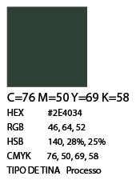
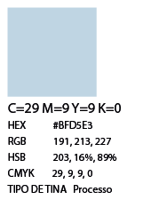
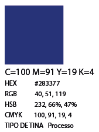
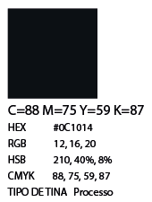
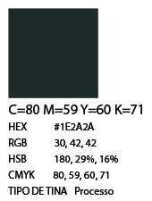
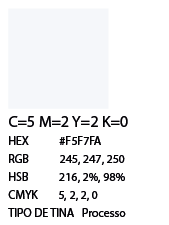

Home
Guaraci
Rudá
Tupã
Jaci
"Jaci, na mitologia Tupi-Guarani é a deusa da Lua, a protetora das plantas, dos amantes e da reprodução. Ela foi criada por Tupã e é irmã de Guaraci.
É para Jaci que as índias rezam por proteção e pelo regresso de seus maridos que saíram pra caçar ou guerrear. Ela, atendendo essas preces, desperta a saudade no coração dos caçadores e guerreiros, para que estes voltem para o colo de suas esposas e cuidem de suas familias."
Fonte

Para esta estampa, usei formas básicas e efeitos para criar duas luas que são o foco principal, representando Jaci. Usei uma paleta de cores principalmente em tons de azul para simbolizar seu domínio sobre a noite e os mistérios do firmamento. Em contraste, usei pequenos sóis dispersos pela arte para representar Guaraci, seu irmão e, em algumas versões do mito, seu esposo, que reina durante o dia.






